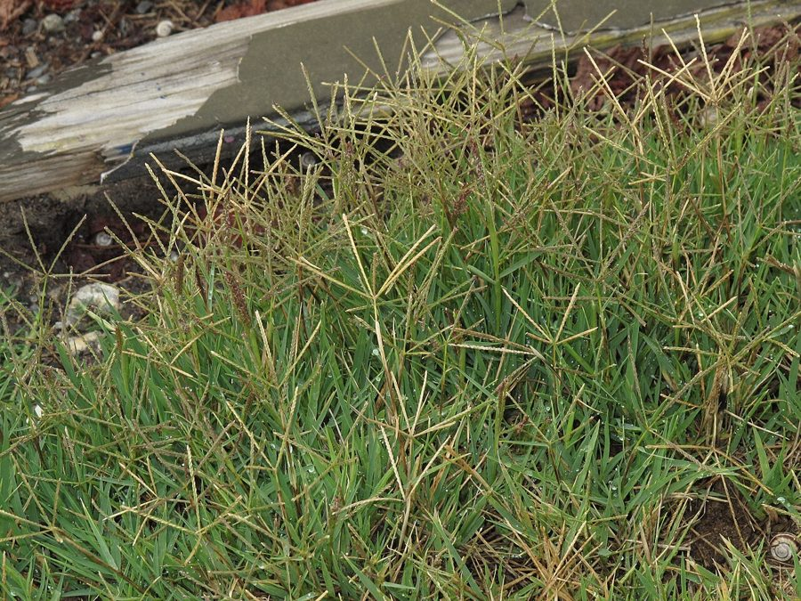

दूबDoob Grass
Cynodon dactylon · Poaceae · FLR-0004

- Scientific name
- Cynodon dactylon (L.) Pers.
- Family
- Poaceae
- Hindi
- दूब / दूर्वा
- Status here
- native
- IUCN
- not evaluated
When to look कब देखें
Present all year.
दूब / Doob Grass
Cynodon dactylon (L.) Pers. — Poaceae
दूब — पृथ्वी की सबसे व्यापक घास जो छह महाद्वीपों पर मौजूद है, और हर हिंदू संस्कार में जन्म से मृत्यु तक साथ निभाती है। जिस पर बच्चे नंगे पाँव दौड़ते हैं, जो विघ्नहर्ता गणेश को चढ़ाई जाती है, और जो कट जाने पर खून को रोकती है — इतनी आम है कि लगभग कोई इसे ध्यान से देखता नहीं।
Quick Identification त्वरित पहचान
| Feature | Description |
|---|---|
| Height | Low-growing, creeping perennial grass, rarely exceeding 10–20 cm in height |
| Growth Habit | Spreads extensively via stolons (above-ground runners) that root at nodes to form a dense mat |
| Leaves | Short (2–6 cm) and narrow (2–4 mm), flat, blue-green, arranged in two rows along the stem |
| Inflorescence | 3–7 slender spike-like branches (2–5 cm long) radiating from a single point like fingers of a hand |
| Fragrance | Distinctive, fresh, earthy grass smell when crushed |
Field tip: Any low-creeping blue-green grass mat on open ground, field bunds, or pathways, with 3–7 finger-like flowering spikes radiating from a central whorl and a fresh earthy smell when crushed, is Doob grass. Extremely resilient to trampling and grazing.
Morphology आकारिकी
Biometrics (typical measurements in the Gangetic plain):
| Feature | Measurement |
|---|---|
| Plant height | 10–30 cm |
| Leaf length | 2–6 cm |
| Leaf width | 2–4 mm |
| Spike (inflorescence) length | 2–5 cm |
| Stolon length | 10–100+ cm |
Root system: Deep, wiry rhizomes underground plus surface stolons. The rhizomes can penetrate 60+ cm into soil — this is what makes it drought-tolerant and nearly impossible to eradicate once established.
Stems: Slender, wiry stolons run along the surface, rooting at each node. Upright shoots arise from nodes. Nodes distinct, slightly swollen.
Leaves: 2–6 cm long, 2–4 mm wide, flat. Surface slightly rough. Colour blue-green, turning yellowish in cold or dry conditions.
Ligule: A fringe of fine hairs at the leaf-sheath junction — visible under a hand lens.
Inflorescence: 3–7 digitately arranged spikes (like fingers of a hand) at the tip of upright shoots, each spike 2–5 cm long. Spikelets tiny, pressed flat against the spike. Purple-green when young, straw-coloured when mature.
Seeds: Tiny, wind-dispersed. Also spreads readily by stolon fragments and rhizome pieces.
हिंदी: जड़ें गहरी — 60+ सेमी तक। यही इसे सूखा सहनशील बनाता है।
ज़मीन पर धावक (stolon) से फैलती है — हर गाँठ से जड़ें और नई घास।
फूल: उँगलियों जैसी 3–7 शाखाएँ।
Sacred and Cultural Significance पवित्रता और सांस्कृतिक महत्व
दूर्वा is one of the most sacred plants in Hinduism. Its ritual use spans every life stage:
गणेश पूजा: Offering 21 paired blades of doob is among the most important acts in Ganesha worship. Each pair represents one of 21 names of Ganesha in the Dūrvā Ganesha Stotra. No other plant substitutes for doob in this ritual.
नवरात्रि and other pujas: Doob is used in kalash (ritual pot), in water purification, and as a component of panchamrit in some traditions.
Birth and naming rituals: Fresh doob is placed near a newborn. In some UP traditions, the umbilical cord is cut over a bed of doob.
Abhishek: Temples use doob water (water in which doob has been immersed) for ritual bathing of idols.
Why is doob sacred? Several mythological explanations exist. One prominent account: Garuda (the divine eagle) was carrying amrit (nectar of immortality) when drops fell on doob — making it forever imbued with life-giving properties. Doob's remarkable resilience — its ability to revive from near-dead during monsoon — reinforces this symbolism.
हिंदी: दूर्वा हिंदू धर्म में जन्म से मृत्यु तक हर संस्कार में उपस्थित है।
गणेश पूजा में 21 दूब की पत्तियाँ चढ़ाना आवश्यक है।
इसकी पवित्रता का एक कारण यह है कि यह लगभग मरकर भी जी उठती है — इसीलिए अमृत का प्रतीक मानी जाती है।
Ecological Role पारिस्थितिक भूमिका
Soil binder: The dense mat of stolons and deep rhizomes binds topsoil against wind and water erosion. On field bunds, roadsides, and embankments where doob is established, soil loss during monsoon rains is significantly lower.
Carbon and moisture: The continuous mat reduces soil surface temperature (by up to 8°C compared to bare soil in summer), retains soil moisture, and contributes organic matter when older portions die back.
Forage: A high-quality fodder grass for cattle, buffalo, goats, and horses. Nutritious and palatable; grazed preferentially over many coarser grasses. The livestock economy of eastern UP partly depends on doob on common lands.
Habitat: The doob mat supports a distinct community of ground-level invertebrates — beetles, ants, spiders, isopods, earthworms. These in turn feed ground-foraging birds (mynas, wagtails) and small reptiles.
हिंदी: दूब मिट्टी को बाँधती है — बारिश में बह जाने से बचाती है।
मिट्टी की नमी बनाए रखती है, गर्मी कम करती है।
पशुओं के लिए उत्कृष्ट चारा — गाय, भैंस, बकरी सबको पसंद।
इसके घने बिछौने में असंख्य कीड़े-मकोड़े रहते हैं।
Medicinal Use औषधीय उपयोग
Cynodon dactylon has been used in Ayurvedic medicine for centuries and has been validated by modern pharmacological research:
Haemostatic (रक्त-स्तम्भक): Fresh doob juice or a paste of crushed leaves applied to cuts and wounds stops bleeding rapidly. Active compounds include tannins and flavonoids that promote platelet aggregation.
Anti-inflammatory: Leaf extract reduces swelling. Used in poultices for insect bites, minor burns, and skin infections.
Diuretic: Infusion of doob used traditionally to treat urinary tract discomfort.
Epistaxis (नकसीर): Juice inserted into nostrils stops nosebleeds — a very widely practised home remedy across UP.
Cooling: Doob juice is believed to be a sheetala (cooling) medicine — given in fever, heat exhaustion, and burning sensation.
हिंदी:
घाव पर: ताज़ी दूब को मसलकर कट पर लगाएँ — खून जल्दी बंद होता है।
नकसीर: दूब का रस नाक में डालें — प्रभावी लोक उपचार।
बुखार/गर्मी: दूब का रस पीना शीतल माना जाता है।
इन उपयोगों में वैज्ञानिक आधार है — शोध से सिद्ध हुआ है।
Phenology मौसम और समय
| Month | State | हिंदी |
|---|---|---|
| Jan–Feb | Dormant; yellowed, sparse | पीली, कम |
| Mar–Apr | Greening from stolons as temperature rises | हरी होने लगती है |
| May–Jun | Active growth; stolons spreading | फैलती है |
| Jul–Sep | Peak growth and greenness; monsoon flush | सबसे हरी — मानसून में |
| Oct–Nov | Flowering; purple-green spikes visible | फूल — बैंगनी-हरी शाखाएँ |
| Dec | Slowing; turning yellow in cold | धीमी; पीली होने लगती है |
Hardiness: Survives drought by retreating to rhizomes, then re-emerges with first rain. Tolerates heavy foot traffic, mowing, grazing, and waterlogging. One of the most stress-tolerant plants on Earth.
हिंदी: जुलाई-सितम्बर में सबसे हरी। ठंड में पीली पड़ती है लेकिन मरती नहीं। पहली बारिश में फिर हरी हो जाती है।
Expected Locally स्थानीय रूप से अपेक्षित
Not a field record. Written from published accounts for eastern Uttar Pradesh. No confirmed local sighting yet — if you have seen it, that is what the atlas needs.
अभी तक स्थानीय पुष्टि नहीं। यह विवरण प्रकाशित स्रोतों से है, किसी अवलोकन से नहीं।
Widespread and abundant across Basti district in almost all terrestrial habitats. It forms the dominant green cover on lawns, temple compounds, roadside banks, and agricultural walkways. It is especially green and lush during the monsoon months (July–September) and is heavily collected by local farmers as fodder for cattle and goats.
Distribution वितरण
Global range: Native to Africa and southern Europe; now widely naturalised across all continents except Antarctica, occurring globally in temperate, subtropical, and tropical regions.
In India: Found throughout the country, from coastal dunes to the Himalayas up to 2,500 m elevation, occupying almost all open habitats.
In Uttar Pradesh: Ubiquitous across the state, recorded in all agro-ecological zones and districts as a dominant ground cover.
In Basti district / eastern UP: Extremely common in all villages, towns, agricultural fields, margins, roadsides, and wasteland patches.
Range notes: No significant range changes documented.
Research Questions शोध प्रश्न
Anyone can investigate these | कोई भी इन प्रश्नों की जाँच कर सकता है
- On which date does doob turn green again after winter? / सर्दी के बाद दूब कब हरी होती है? — Record the date each year. Tracks seasonal temperature as a climate signal.
- Which animals graze it most? / कौन सबसे ज्यादा खाता है? — Watch a doob patch for 30 minutes and record every animal that grazes.
- Does doob grow where Parthenium grows? / क्या दूब और गाजर घास एक साथ उगती हैं? — Check 10 sites. Parthenium (Parthenium hysterophorus, FLR-0001) is known to inhibit doob through allelopathy — is this visible locally?
- What insects live in a doob patch? / दूब के बिछौने में कौन से कीड़े हैं? — Place a white sheet beside a doob mat and beat it gently — record what falls out.
- Who still uses doob medicinally? / दूब का औषधीय उपयोग कौन करता है? — Ask elders which home remedies use doob. Document exact preparation and ailment.
Similar Species मिलती-जुलती प्रजातियाँ
| Species | How to tell apart | हिंदी |
|---|---|---|
| Dactyloctenium aegyptium (Crow's Foot Grass) | Spikes curved outward at tips like claws; slightly coarser | शाखाएँ नोक पर मुड़ी हुई |
| Eleusine indica (Goosegrass) | Taller (30–60 cm); coarser; spikes in 2 rows; no stolons | लंबी; कड़ी; धावक नहीं |
| Digitaria spp. (Crabgrass) | Leaves broader and softer; spikes fewer; no blue-green tinge | चौड़ी पत्तियाँ; नीला-हरा रंग नहीं |
Field rule: Low-creeping mat + narrow blue-green leaves + 3–7 finger-like spikes in a whorl + distinctive fresh smell when crushed = Cynodon dactylon.
Taxonomy & Classification वर्गीकरण
Original description. Cynodon dactylon was described by Carl Linnaeus in 1753 as Panicum dactylon in Species Plantarum, vol. 1, p. 58. It was transferred to the genus Cynodon by Christiaan Hendrik Persoon in 1805 in Synopsis Plantarum, vol. 1, p. 85. Type locality: Southern Europe. The genus name Cynodon is from Greek kyon (dog) and odous (tooth), referring to the tooth-like shape of the buds or leaf sheaths.
Subspecies. Monotypic — no subspecies are currently recognised.
Family and order placement. Placed in the order Poales, family Poaceae (grass family), subfamily Chloridoideae, tribe Cynodonteae. Poaceae is one of the most widely represented plant families in the Gangetic plain.
Phylogenetic notes. Cynodon dactylon is a highly variable polyploid complex. It is the type species of the genus Cynodon, which consists of about 10 species. No major taxonomic controversies are currently active.
IUCN status rationale. This species has not been evaluated by the IUCN Red List (Not Evaluated). However, it is one of the most abundant, widespread, and resilient plants on Earth, facing no conservation threats.
Photo Gallery फोटो गैलरी
References संदर्भ
- Linnaeus, C. (1753). Species Plantarum. Laurentius Salvius, Holmiae.
- Persoon, C.H. (1805). Synopsis Plantarum. Carol. Frid. Cramerum, Parisiis Lutetiorum.
- Bor, N.L. (1960). The Grasses of Burma, Ceylon, India and Pakistan. Pergamon Press.
- Goyal, M. et al. (2011). Phytochemical and pharmacological properties of Cynodon dactylon. International Journal of Pharmaceutical Sciences and Research, 2(6), 1378–1385.
- Botanical Survey of India — Flora of Uttar Pradesh.
- Hooker, J.D. (1897). Flora of British India, Vol. 7. Reeve & Co., London.
- GBIF Occurrence Data — Cynodon dactylon records (2010–2024).
Source file: species/flora/grasses/doob_grass.md